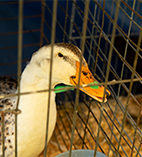
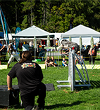
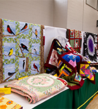

Volunteer
Volunteers are the heart and soul of the Port Hope and District Agricultural Society. When it comes to the production of our annual fair, we couldn’t do it without our volunteer support.
We are always looking for people that want to lend a hand. We are looking for volunteers who are able to offer a little or a lot. What ever your availability is, we have a spot for you! Some of the sampling of those we need to make the next Fair another great event are Gatekeepers/Greeters, Beer Garden Staff, Setup/Knockdown Crew, Booth Crew, Event helpers, Board Members. If you are interested in volunteering with the Port Hope and Agricultural Society and feel you have a valuable skill to offer, we would love to hear from you!